What the evidence says about this pillar
- Of 19 features under chat, 14 are shipped (two of them only partly), 4 are being built and 1 is only planned; nothing is purely your words, so chat is the most complete pillar.
- Plans and budgets before big work has 138 unmerged commits on a side branch since Sept 5, last touched Sept 24; it waits on your stage-two decisions, not on engineering.
- The assistant remembering things about you is the biggest hollow spot: you can edit memory notes, but nothing makes the YouCoded assistant learn on its own, and the roadmap only parks it.
- Native parity (the YouCoded assistant matching Claude Code) is the largest open program and has no branch of its own; the cleanup that unblocks it has been on hold since Sept 18.
- Office editing and document comments reached master on Sept 29 and Oct 2 but are not in a released version; the last release, 1.3.0, was Sept 20.
- OneDrive handling was paused Sept 15 on a branch that says 'resume only on user instruction'; nothing exists on master.
What the evidence says about this pillar
- Per-project skills and tools is built (21 commits, draft pull request #571) and waiting on your review of each screen; it also has to be brought up to date with the Oct 4 one-core merge, and your Oct 5 triage said 'do next'.
- The built-in 'Your Assistant' project is a 1.3.1 blocker with no code; three other things lean on it: assistant memory, global instructions, and later phone requests handed to the right project.
- The project-versus-agent overlap you described has no object behind it: the nearest piece is helper files, and project helpers work only by hand-written files with no screen.
- Three vision items under 'how projects, agents and instructions fit' (agent, reusable instructions, who-wins rule) form a chain, and the first link, a reusable agent, is only a parked idea.
- Search in big projects stops at 2,000 files; a draft fix is waiting on four of your answers.
- Sync pills for the project list sit on a 209-commit unmerged branch (ui-consistency-audit) mixed with many unrelated changes.
What the evidence says about this pillar
- Pages live inside a sandbox that is the whole safety story and also the ceiling: a page cannot touch files, tools or the assistant. Nearly every vision item (files, assistant tasks, attached agents, servers, converted apps) means building another approved door; only four doors exist (web requests, a home device, live feeds and camera, a bank).
- Connections, the Home page and the Money page are merged to master but in no numbered release: 1.3.0 (2026-09-20) came before Phase 2 (2026-09-23). The builder-skill update that teaches connections is finished and held on a marketplace branch for the release.
- Home and Money are Destin's hand-installed personal pages; nothing ships them, and the roadmap says Money is not for the marketplace. The only planned path for anyone else to get a page is Phase 4, which is not designed.
- Connections are set up in three styles of place: the page's approval card, the marketplace 'What this can do' wording (the page card borrows it) and assistant permission grants. They are not one list yet.
- Weather, task board, trip board, paint and headlines pages do not exist as shipped pages; they appear only as sample pages in review decks. Pages are desktop only and the phone layout was never designed.
- Pages talk to the rest of the app only through their folder and the page-data tool for the assistant; no link to agents, skills or sessions exists. Agent features under Pages depend on an agent object that does not exist.
What the evidence says about this pillar
- The store is big (4,100+ listings in the app) but the 2026-08-31 check found no popularity data at all, so featured items are editorial. The registry repo itself holds only 359 hand-managed entries; the rest is mirrored.
- Pages are not a kind of thing in the store. The store has five kinds plus themes; adding Pages means a new kind across the app, the service and the publisher, plus the unresolved trust-on-update design.
- 'Fork' in the code only means copying the registry on GitHub to open a pull request; there is no fork or family tree of listings, and no parent field to build one on.
- Reviews, thumbs and bug reports are separate: the store has thumbs and comments (and a flag on reviews), the app's Report a bug goes to YouCoded's own GitHub, and nothing sends a problem to a listing's author.
- The 'Likely safe' badge only checks for leaked secrets and file shapes, a gap that matters more once pages or servers can be published.
- Assistant search of the store is a 1.3.1 blocker and unbuilt; two other setup helpers (assistant-led setup, integrations rebuild) exist only as research.
What the evidence says about this pillar
- Social is real but narrow: friends by handle, online status, and four games on desktop and Android, all tied to the same GitHub sign-in as marketplace comments and likes.
- There are no direct messages and no sharing with friends. The only chat is inside a game, and share links go to anyone, not to a friend.
- Both feeds ideas are really Pages features: the parked fediverse page waits on Pages sign-in and background refresh, and wrapping existing social sites waits on a website view that Pages cannot do yet.
- The social base has open trust gaps: forfeit wins can be faked, a rejected call signs you out silently, account takeover via the sign-in link is rated medium and deferred, and the friends screen is buried inside the game lobby code.
- Anything new (messages, sharing, feeds) would sit on the same small Cloudflare service and sign-in, so account safety work comes first.
What the evidence says about this pillar
- Most of 'Sync' is done for computers: chats and projects follow you between Windows, Mac and Linux machines through your own GitHub account. The phone is the exception: it reaches your computer live rather than holding its own copy.
- Mesh (hand-off, any-device, cloud) is all idea-stage: one parked roadmap entry marked v1.4. Nothing in the app picks a device for you.
- Mesh cannot start before scheduled agents exist; there is nothing to hand off. The real blocker for Mesh is the Agents pillar, not Sync.
- The weakest done item is 'never loses or duplicates your work': a clash between two devices is still just a vanishing warning, and the fix is postponed to 1.3.3.
- Remote access and sync solve the same wish (continue anywhere) by different means, so they are two rows here but one idea for users.
What the evidence says about this pillar
- Everything under 'run while you're away' is blocked on one decision: what an automation is made of (Destin's 'Assistants made of Duties'). No scheduling code exists in either app.
- Helpers (Specialists), the saved recipe, project agents and a personal agent are largely one thing described several times; the Specialist file is the only real version today.
- The agent view has no design at all; the nearest real thing is a helpers popup inside a single chat.
- Workflows (several agents, different models) are furthest along: plans are specified, probed and have unmerged branches, waiting on Destin's decisions.
- Putting an agent inside a Page is vision only; Pages are deliberately sandboxed from the assistant.
What the evidence says about this pillar
- Look-and-feel is the most finished pillar: themes, theme editing, theme builder and the buddy have all been shipped since April or September.
- Any model, no single provider is shipped (Claude, ChatGPT, OpenRouter, local); cost and quality tags for the picker are designed but have sat unmerged since Sept 11.
- A free model that is good enough exists only as your hope; local models run free today, but the roadmap shows only fit warnings, not speed, and nothing aims at 'good enough'.
- Office, Home Assistant and bank (Plaid) pages exist, but the last two are hand-installed for you; making them available to everyone depends on Pages and the marketplace, which are outside this pillar.
- The student and developer setups are really bundles of tools for a type of person; no 'profile' idea exists in the roadmap, and the student bundle depends on scheduled agents that are not built.
- OpenAI's newer official ChatGPT sign-in is built but switched off by your choice, to keep free plans and usage bars.
What the evidence says about this pillar
- This pillar is mostly done: desktop on three systems, Android, and a phone browser all exist.
- The big open piece is the Android rebuild onto the shared core. Phone browser and computer already share one feature list as of 2026-10-05, but the Android app does not.
- Signing is half done: Windows is signed, Mac is blocked on Apple refusing the company account, and there is no Play Store or iPhone app.
- Remote access works only through your own computer and Tailscale; a hosted web version or account sign-in is a v1.4 idea.
- Offline sign-in expiry has a design deck but no code; offline use works today only with local models.
What the evidence says about this pillar
- Of the Together items, the first two groups are user-facing (source, bug reports, roadmap); all of the 'workflow' items are developer tooling that users never see.
- Open source and reporting are done. The public roadmap is a link to a developer-style file, not a designed screen.
- The workflow tools (decks, reviewer agents, perf lab, shoot) are shipped and in daily use; this surface is the one still being built.
- 'Checked logic for every ordering' could not be confirmed as an existing tool; verify.sh covers types, tests, dead code and style only.
- Several developer-tool branches (dev-xray, dev-dashboard) are unmerged experiments that overlap this surface.

4 branches hold only notes and research

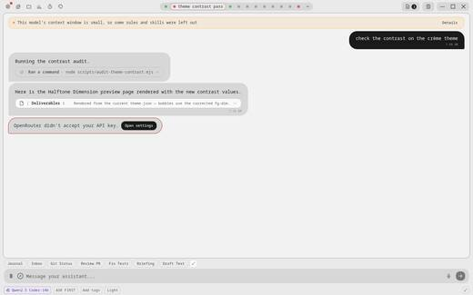
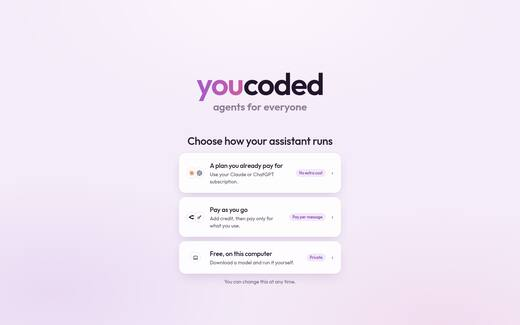


- Switching between chats is faster, and many open tabs no longer slow things down
- Verified chat performance fixes
- Scrolling feels right again; a chat no longer vanishes; a stuck drag in the switcher is fixed
- Custom words for voice dictation; voice reliability
- Oversized images are handled safely
- Picking up a conversation again, and what a helper agent is doing, both show properly
- Pages can connect to Home Assistant
- Sign in with the official ChatGPT flow
- The buddy can be hidden from the tray
- A cleaner minimal-chrome theme; the Mac dock icon; a sudo prompt that explains itself
- Sync repairs itself more robustly and explains what it did
- Sync watches only what it should
- Windows builds are signed
- Windows developer mode is no longer required
- Linux catalog screenshots
- One core for desktop and Android ("one-core")
- Startup speed; an always-on hitch recorder
- Brand identity and the website
- UI review tooling, doc sweeps, a trimmed changelog
It is the most finished unfinished thing: a P1 roadmap item, draft pull requests open since Sept 24, checks passing, waiting only on your UI review. Low effort for a feature users will feel.
- The roadmap's built-in "Your Assistant" project needs the same per-project switches
- Native-only users still have no skills home of their own (a release blocker); this branch is where that home gets decided
- Marketplace search from inside a chat would read the same list
- Per project: which skills and tools are on
- A default for new projects
- Whether a plugin may turn itself on in every project
Other options
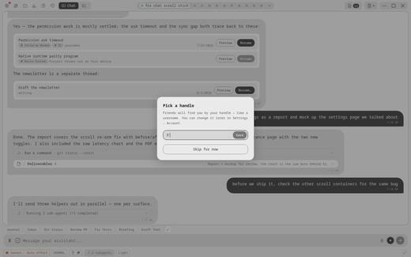
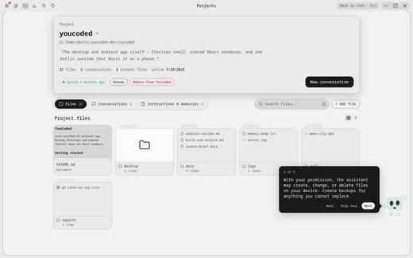
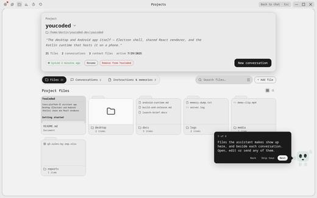
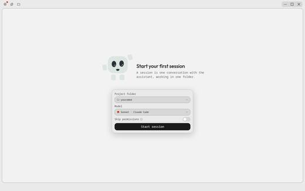

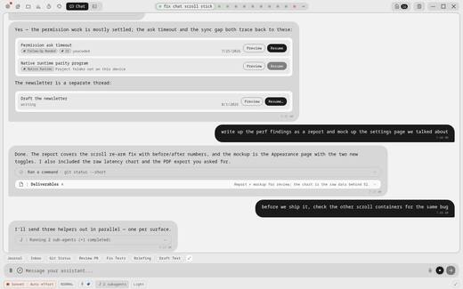
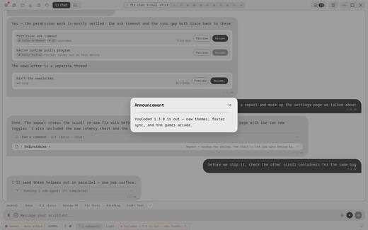
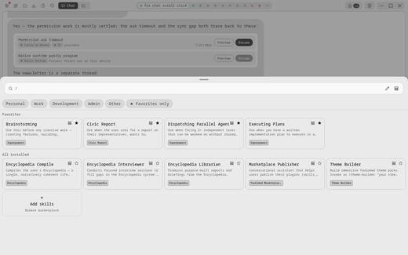
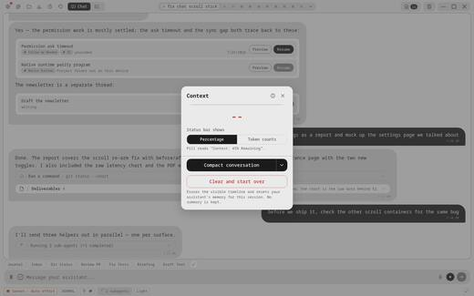
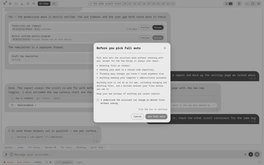
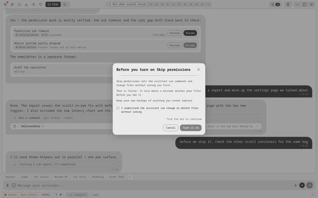
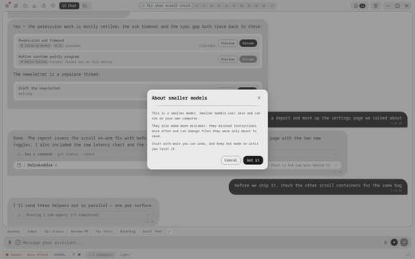
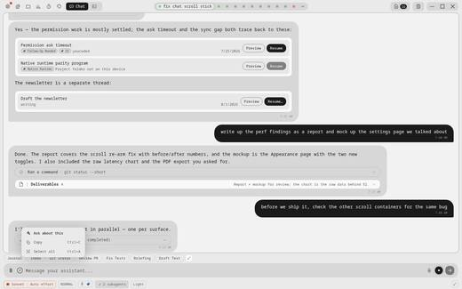
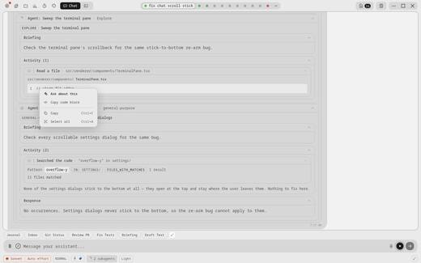
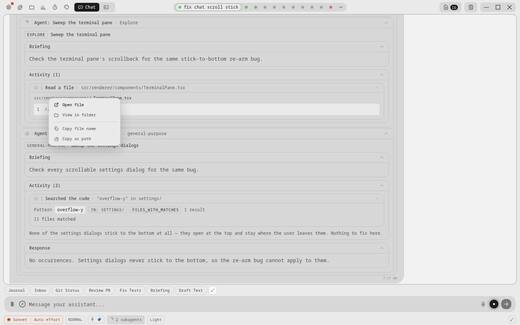
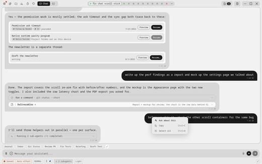

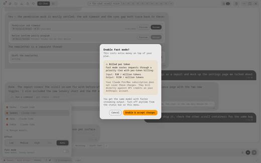
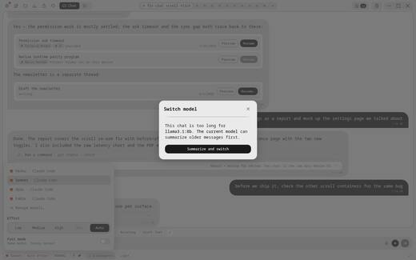
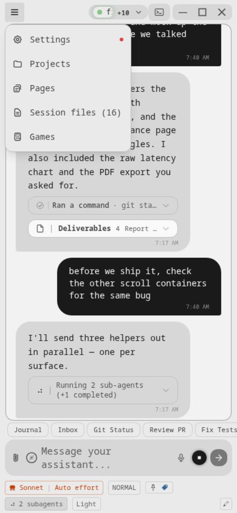
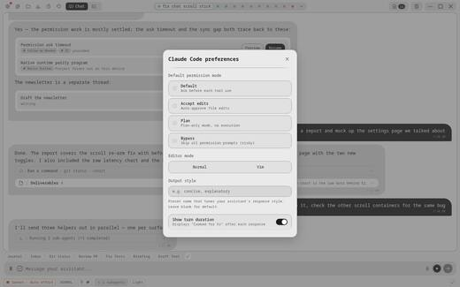
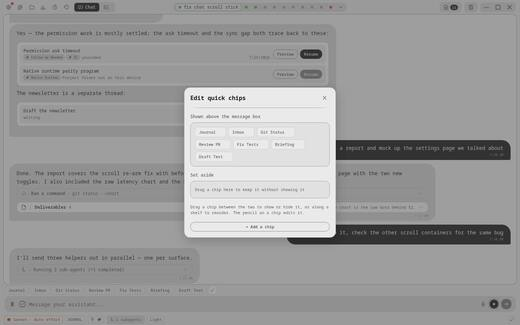
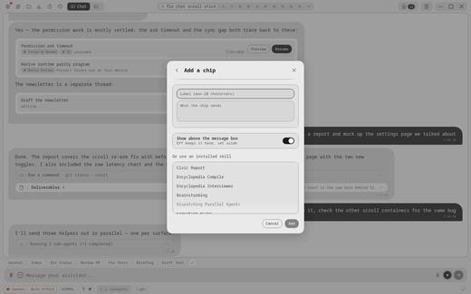
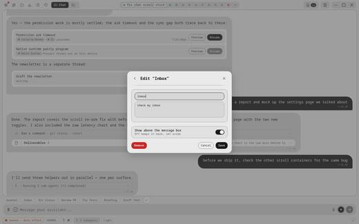
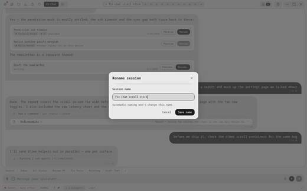
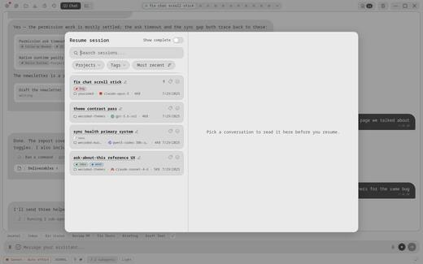
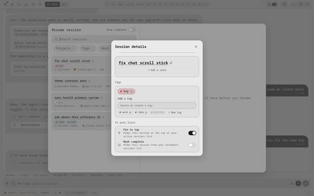
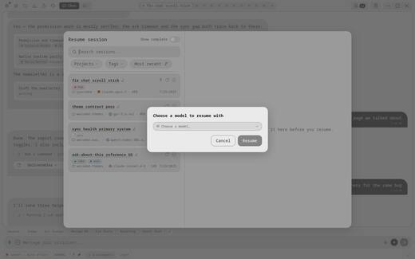
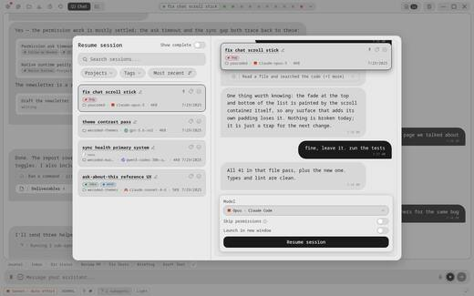
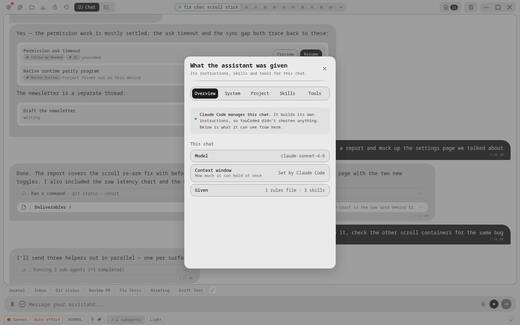
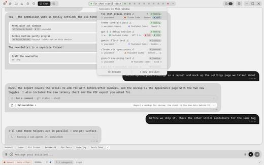

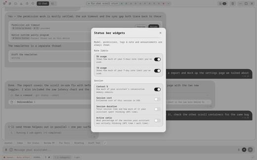
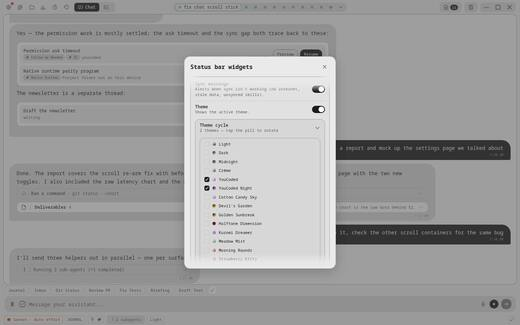
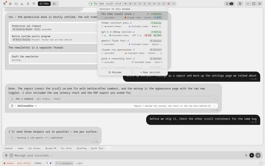
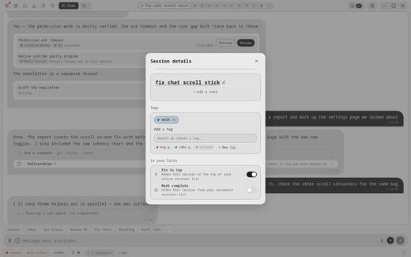
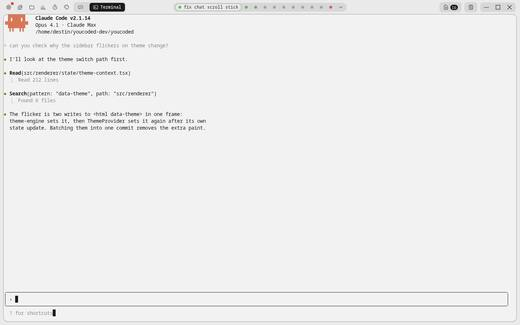

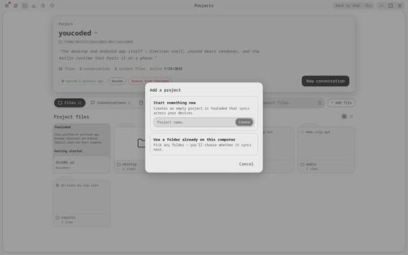
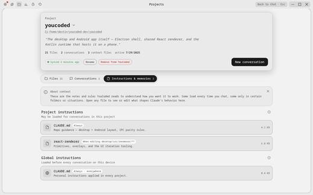
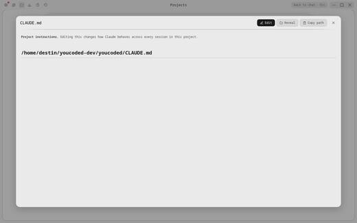
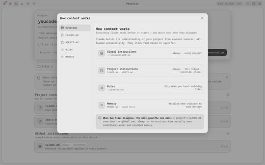
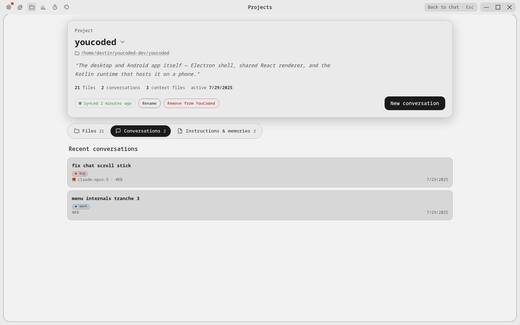
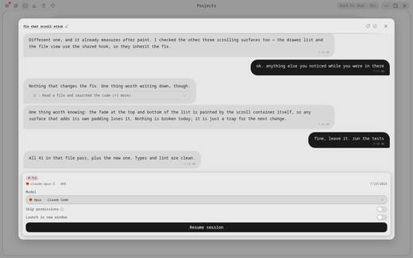

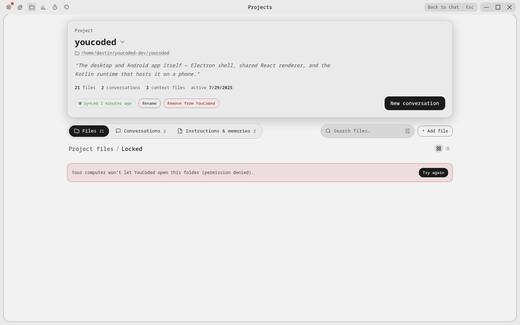
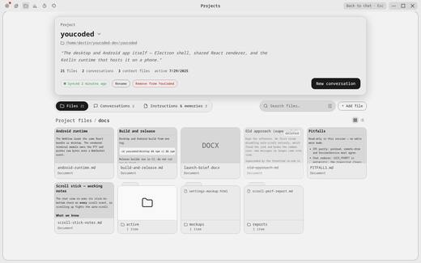
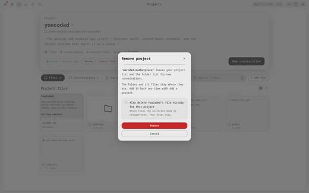
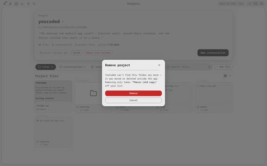
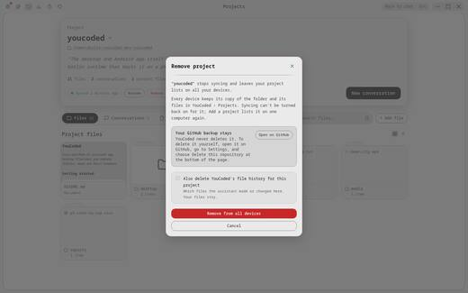
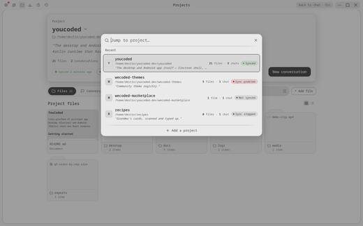
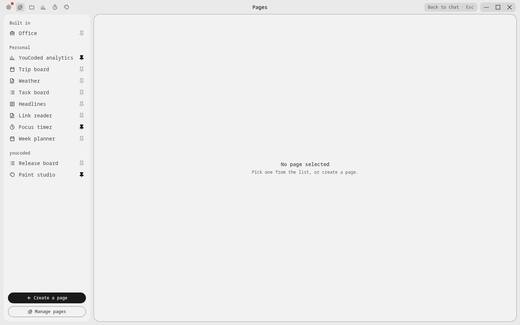
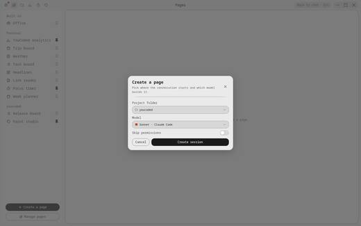


| Chat | Projects | Pages | Marketplace | Settings | Devices & sync | ||
|---|---|---|---|---|---|---|---|
| Model | Chosen in the chat and in Settings; a specialist carries its own preference. Three places. | ||||||
| Instructions | Project files, rules and memory. Edited in the project; shown in the chat. | ||||||
| Skills & commands | Installed from the marketplace, used in chat. Per-project control is the draft branch above. | ||||||
| Tools & MCP servers | Plugins bundle them; chat uses them; Pages reach the assistant through one. No settings screen exists. | ||||||
| Permissions | Set in Settings, asked in chat, granted once per Page connection. Three places. set in 3 places | ||||||
| Hooks | Only plugins carry them. Nothing shows them to you. | ||||||
| Connections & accounts | Set up in three places: a Page, a listing, Settings. set in 3 places | ||||||
| Theme | Picked in Settings or the marketplace; Pages and the status bar follow it. | ||||||
| Saved recipes (Specialists) | The closest thing to a reusable agent today: prompt, tools, read/write rule, model preference. | ||||||
| Device | Vision only: mesh would make "which computer runs this" a block. |